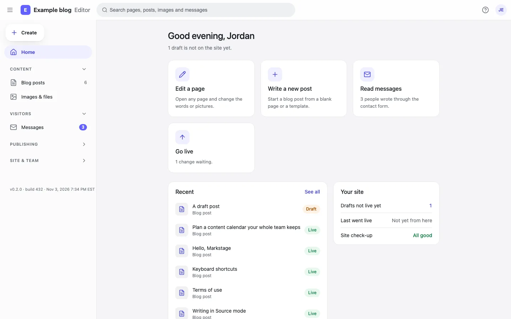

Edit on the real page
Writers change words, images, tables and links on the site’s own design: its components, its CSS, its column width. Alt text, captions and links are edited where they appear.

Source-available · Self-hosted · For Astro
Markstage lets writers change your Astro site’s Markdown and JSON content on its own design, not in grey form fields. Every save is a clean git diff of exactly what changed, committed in the writer’s name on a Markstage server. No content database, no MDX, no cloud.
Get it on GitHubInstall in 3 stepsRead the docs
Edit your Markdown on the real stage. Everything a content team needs from a CMS, on top of the files you already have.
Writers change words, images, tables and links on the site’s own design: its components, its CSS, its column width. Alt text, captions and links are edited where they appear.
The outline lists every heading, list, table and quote. Drag a block, or press Alt and an arrow, to move it. Locked blocks stay where the site put them.

Open and save changes nothing; only the blocks you change are rewritten. With the Markstage server, every save is a commit with your name, and the history compares any two versions side by side.

See the search result as Google shows it, with the title and description measured in pixels, the headings in order, weak links and images without alt text.

Page templates, sections and snippets in folders. Drag one onto a page, or start a page from a template. A synced snippet is edited once and every page that uses it follows.

Put several changes into one release, preview it, have it approved, then publish it now or schedule it. Roll it back if you need to.

Each environment is a branch plus a server. Promote a branch to staging and then to production, with checks, screenshots and rules about who may do it.

The site’s forms post to Markstage on your own host. Messages land in the Inbox with spam checks and daily limits, and the team gets an email for each one.

Upload, find and reuse images, see which ones have no alt text or are not used, and crop or replace one everywhere it appears.

Posts are Markdown files and pages are JSON files in your site’s repo. Markstage adds no database for content and no MDX.
In astro dev, the editor at /markstage/ draws each entry inside its real page, with your site’s CSS and components.
Only the blocks you changed are written back. Moving a block and moving it back gives a byte-identical file.
A self-hosted Node server adds sign-in, roles, the Library, releases, environments, forms and history, and builds and deploys the site.
Write on the page readers will see, with plain words, a guide inside the editor and no Markdown to learn.
Keep Astro, your components and your git workflow. Give clients a real editor without a hosted CMS or a content database.
Search checks, internal link suggestions, page types, redirects and site health for every page, before it goes live.

Markstage is not on npm yet: install it from a clone. Clone the repo, install, and open the editor on the example blog. Needs Node.js 22.13 or newer and git.
git clone https://github.com/spcaeo/markstage.gitcd markstage && npm installnpm run dev -w examples/blogYour site needs Astro 7.4 or newer. In your site’s folder next to the clone, link the packages (they are not on npm yet), add markstage() to the integrations in astro.config.mjs and describe your collections in markstage.config.mjs.
npm install ../markstage/packages/core ../markstage/packages/editor ../markstage/packages/astroSelf-host the Markstage server with Docker compose, or with systemd and nginx, next to your static site. Sign-in, roles, releases and backups come with it.
Markstage is in pre-release and in active development. The clone address: https://github.com/spcaeo/markstage.git
Markstage is for teams who want a visual editor without giving up Markdown files, git history and their own servers. See where it fits next to hosted and git-based CMSs, and where they lead.
Markstage is a visual editor for Markdown and JSON content sites. Writers edit on the site’s own design instead of in form fields, and every save is a clean git diff of exactly what they changed (with the Markstage server, a commit in their name). Its first adapter is Astro.
Yes. Markstage is source-available under the Elastic License 2.0: you may use, copy, change and self-host it for free, including in your business and for your clients’ sites. You may not offer it to others as a hosted or managed service without a commercial licence from Space-O Technologies.
Yes. The code is public on GitHub, free to read, change, use and self-host. Markstage is source-available, not open source in the OSI sense: it may not be resold as a hosted service without a commercial licence.
No. Content stays as Markdown and JSON files in your git repo. One SQLite file on the server (node:sqlite, built into Node.js 22.13 and newer) holds people, sessions, the inbox, drafts in progress, trash, releases, the media index and the audit log. There is no database server to install.
Astro today, through the @markstage/astro integration. The core (the document model and the Markdown converter) has no framework in it, so other adapters can follow.
Only the blocks you change. Opening and saving a file with no edit leaves it byte for byte the same, and moving a block and moving it back gives an identical file, so a review shows exactly what moved.
On your own computer in astro dev, with no sign-in and on 127.0.0.1 only, and on your own server for a team: Docker compose, or systemd and nginx. There is no Markstage cloud.
An agent that speaks the Model Context Protocol can read the site and draft changes as the person whose token it holds. It never publishes, deletes or promotes anything on its own: a person reviews its release and puts it live.
Made by Space-O Technologies. Free to self-host under the Elastic License 2.0.